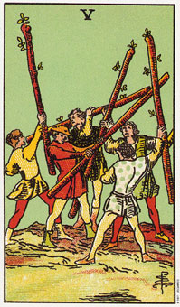

权杖五暗示缺乏和谐或者内在的冲突。
权杖五描绘五个人有五种行动方向的情景。每个人相信他们自己拥有最佳的方法，没有人听从别人，这就是太多厨师弄坏一锅汤的例子。
这张权杖五代表冲突。虽然冲突不至于伤害任何人，但却是所有人全盘卷入。只是权杖类型的天性，总是把生活看成战争，因为如果没有障碍，就没有冒险了。
权杖类型的人以规则观念和公平竞争的方式来寻求行动的快乐，他们往往喜欢体育与竞赛活动。权杖五涉及身体上的较量，宝剑王牌则涉及心智上的较量，这是二者不同之处。
权杖五表示你卷入不必要的较量比赛，这会延误或干扰你达到目的。另一方面，目标远离或难以达成，对权杖类型的人来说，往往更有吸引力。
大体上的意义
在日常中，权杖五暗示一群人无法团体工作。例如，你可能短期在一个团队计划立工作，而团队里每个人都由他们自己的想法。权杖五指出在团队成员同意要妥协或共同合作之前，将会发生冲突。
权杖五代表同一时间内，对太多要求所产生的内在冲突。例如，玛丽娜在最近的一次占卜中，机会每次都选到权杖五。而事实是，她企图周旋与一个全职工作，一个夜间教职，以及一个家庭之间，而且选修了几门课。所有的事情需要她同时照料，这开始似乎很吸引她，但现在她则累坏了。
权杖五也可以表示你浪费精力在太多的方面，以至没有一方面有效率，或表示在激烈的竞赛中挣扎。
两性关系上的意义
在两性关系的算法中，权杖五说明两人各有不同的生活形态，没有相关的兴趣和共同的朋友。各自追求不同的生活形态时，亲密关系就会受阻。有许多的刺激欢乐，但是有一体性。
权杖五也指出火爆且竞争的两性关系，这会造成伙伴之间经常性的冲突。
倒立权杖五
当权杖五倒立时，这表示你已采取一个更开放的行动，而且你准备妥协或尝试新方法。所有塔罗牌的五都表示某种形式的改变，倒立时，表示以一个开放心胸及更包容的方式来改变。
倒立权杖五表示理解到时间与精力都被浪费了，采取新方法是必要的。有时在你准备改变之前，规则需要被放弃，战争需要变得更严重。
在一个团体或生涯的算法中，倒立的圈杖五暗示妥协是可能的。而且在如此情况下才能更亲近的倾听别人。